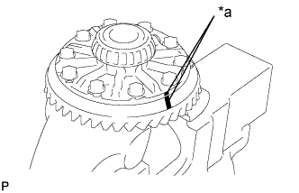

ЧАШКА ПЕРЕДНЕГО ДИФФЕРЕНЦИАЛА В СБОРЕ > ПОВТОРНАЯ СБОРКА |
| 1. УСТАНОВИТЕ ПОДШИПНИК ВАЛА ПРАВОЙ ПОЛУОСЕВОЙ ШЕСТЕРНИ ПЕРЕДНЕГО ДИФФЕРЕНЦИАЛА |
С помощью SST и пресса запрессуйте подшипник вала.
С помощью съемника стопорных колец установите пружинное стопорное кольцо.
| 2. УСТАНОВИТЕ ПРАВЫЙ ВАЛ ПОЛУОСЕВОЙ ШЕСТЕРНИ ДИФФЕРЕНЦИАЛА В СБОРЕ |
Установите вал на трубку дифференциала.
С помощью круглогубцев установите пружинное стопорное кольцо.
| 3. УСТАНОВИТЕ САЛЬНИК ВАЛА ПОЛУОСЕВОЙ ШЕСТЕРНИ ДИФФЕРЕНЦИАЛА |
 |
Покройте кромку нового сальника универсальной консистентной смазкой.
С помощью SST и молотка с пластмассовым покрытием вбейте сальник.
| 4. УСТАНОВИТЕ КОРПУС ДИФФЕРЕНЦИАЛА В СБОРЕ |
Установите 2 упорных шайбы на 2 полуосевых шестерни.
| Толщина | Толщина |
| 1,48 - 1,52 мм (0,0583 - 0,0598 дюйма) | 1,73-1,77 мм (0,0681-0,0697 дюйма) |
| 1,53 - 1,57 мм (0,0602 - 0,0618 дюйма) | 1,78-1,82 мм (0,0701-0,0717 дюйма) |
| 1,58 - 1,62 мм (0,0622 - 0,0638in.) | 1,83-1,87 мм (0,0720-0,0736 дюйма) |
| 1,63-1,67 мм (0,0642-0,0657 дюйма) | 1,88 - 1,92 мм (0,0740 - 0,0756 дюйма) |
| 1,68 - 1,72 мм (0,0661 - 0,0677 дюйма) | - |
 |
Установите 2 полуосевых шестерни, 2 ведущих шестерни, 2 упорных шайбы полуосевых шестерен, 2 упорных шайбы ведущих шестерен и вал сателлитов в корпус дифференциала.
Измерьте боковой зазор полуосевой шестерни.
С помощью индикатора часового типа измерьте боковой зазор полуосевой шестерни, прижимая одну из ведущих шестерен к корпусу дифференциала.
С помощью бородка с тонким цилиндрическим концом 5 мм и молотка вбейте стопорный штифт в корпус дифференциала и отверстие вала сателлитов.
Накерните корпус дифференциала.
| 5. УСТАНОВИТЕ КОРОННУЮ ШЕСТЕРНЮ ДИФФЕРЕНЦИАЛА |
Очистите контактные поверхности корпуса дифференциала и коронной шестерни.
Разогрейте коронную шестерню в воде с температурой примерно 100°C (212°F).
Осторожно извлеките зубчатый венец из кипящей воды.
После того, как поверхность коронной шестерни полностью обсохнет, быстро установите ее в корпус дифференциала.
|  |
Совместите метки на коронной шестерне и корпусе дифференциала.
| *a | Метка |
После того как коронная шестерня в достаточной степени остынет, нанесите герметик-фиксатор резьбы на 10 установочных болтов и вверните их.
| 6. УСТАНОВИТЕ ПОДШИПНИК КОРПУСА ПЕРЕДНЕГО ДИФФЕРЕНЦИАЛА |
С помощью SST и пресса запрессуйте 2 подшипника (внутренние кольца) в корпус дифференциала.
| 7. УСТАНОВИТЕ ПОДШИПНИК КОРПУСА ПЕРЕДНЕГО ДИФФЕРЕНЦИАЛА |
С помощью SST и пресса запрессуйте подшипник корпуса (наружное кольцо) в сепаратор подшипника корпуса дифференциала.
| *a | Шайба корпуса |
С помощью SST и пресса запрессуйте подшипник корпуса (наружное кольцо) в чашку дифференциала.
| *a | Шайба корпуса |
| 8. УСТАНОВИТЕ ЗАДНИЙ КОНИЧЕСКИЙ РОЛИКОВЫЙ ПОДШИПНИК ПЕРЕДНЕЙ ВЕДУЩЕЙ ШЕСТЕРНИ (НАРУЖНЫЙ) |
С помощью SST установите задний конический роликовый подшипник передней ведущей шестерни (наружное кольцо).
| 9. УСТАНОВИТЕ ПЕРЕДНИЙ КОНИЧЕСКИЙ РОЛИКОВЫЙ ПОДШИПНИК ПЕРЕДНЕЙ ВЕДУЩЕЙ ШЕСТЕРНИ |
С помощью латунного стержня и молотка вбейте маслонакопительное кольцо.
С помощью SST установите передний конический роликовый подшипник передней ведущей шестерни (наружное кольцо).
| *A | Для задней двери |
| *B | для передней двери |
| 10. УСТАНОВИТЕ ПЕРЕДНИЙ КОНИЧЕСКИЙ РОЛИКОВЫЙ ПОДШИПНИК ПЕРЕДНЕЙ ВЕДУЩЕЙ ШЕСТЕРНИ |
Установите шайбу на ведущую шестерню.
С помощью SST и пресса установите передний подшипник на ведущую шестерню.
| 11. ПРОВЕРЬТЕ ПРЕДНАТЯГ ВЕДУЩЕЙ ШЕСТЕРНИ ДИФФЕРЕНЦИАЛА |
 |
Установите ведущую шестерню, роликовый подшипник и маслоотражатель в корпус дифференциала.
 |
С помощью SST установите соединительный фланец.
Отрегулируйте преднатяг ведущей шестерни путем затяжки гайки соединительного фланца.
Удерживая фланец на месте с помощью SST, затяните гайку.
 |
Динамометрическим ключом измерьте преднатяг.
| Параметр / Устройство | Заданные условия |
| Новый подшипник | 0,98-1,57 Н*м (10-16 кгс*см, 8,7-14 фунт-сила-дюймов) |
| Подшипник, бывший в употреблении | 0,49 - 0,78 Н*м (5 - 8 кгс*см, 4,3 - 6,9 фунт-сила-дюймов) |
| 12. УСТАНОВИТЕ КОРПУС ДИФФЕРЕНЦИАЛА В СБОРЕ |
| 13. ОТРЕГУЛИРУЙТЕ БОКОВОЙ ЗАЗОР ЗУБЧАТОГО ВЕНЦА |
Установите сепаратор подшипника полуоси и закрепите его 10 болтами.
С помощью SST и индикатора часового типа измерьте боковой зазор между зубьями в главной передаче.
| Толщина | Толщина | Толщина |
| 1,57 - 1,59 мм (0,0618 - 0,0626 дюйма) | 1,79 - 1,81 мм (0,0705 - 0,0713 дюйма) | 1,99 - 2,01 мм (0,0783 - 0,0791 дюйма) |
| 1,59 - 1,61 мм (0,0626 - 0,0634 дюйма) | 1,81 - 1,83 мм (0,0713 - 0,0720 дюйма) | 2,01 - 2,03 мм (0,0791 - 0,0799 дюйма) |
| 1,61 - 1,63 мм (0,0634 - 0,0642 дюйма) | 1,83 - 1,85 мм (0,0720 - 0,0728 дюйма) | 2,03 - 2,05 мм (0,0791 - 0,0807 дюйма) |
| 1,63 - 1,65 мм (0,0642 - 0,0650 дюйма) | 1,85 - 1,87 мм (0,0728 - 0,0736 дюйма) | 2,05 - 2,07 мм (0,0807 - 0,0815 дюйма) |
| 1,65 - 1,67 мм (0,0650 - 0,0657 дюйма) | 1,87 - 1,89 мм (0,0736 - 0,0744 дюйма) | 2,07 - 2,09 мм (0,0815 - 0,0822 дюйма) |
| 1,67 - 1,69 мм (0,0657 - 0,0665 дюйма) | 1,89 - 2,01 мм (0,0744 - 0,0791 дюйма) | 2,09 - 2,11 мм (0,0822 - 0,0830 дюйма) |
| 1,69 - 1,71 мм (0,0665 - 0,0673 дюйма) | 1,89 - 1,91 мм (0,0744 - 0,0752 дюйма) | 2,11 - 2,13 мм (0,0830 - 0,0839 дюйма) |
| 1,71 - 1,73 мм (0,0673 - 0,0681 дюйма) | 1,91 - 1,93 мм (0,0752 - 0,0760 дюйма) | 2,13 - 2,15 мм (0,0839 - 0,0846 дюйма) |
| 1,73 - 1,75 мм (0,0681 - 0,0689 дюйма) | 1,93 - 1,95 мм (0,0760 - 0,0768 дюйма) | 2,15 - 2,17 мм (0,0846 - 0,0854 дюйма) |
| 1,75 - 1,77 мм (0,0689 - 0,0697 дюйма) | 1,95 - 1,97 мм (0,0768 - 0,0776 дюйма) | - |
| 1,77 - 1,79 мм (0,0697 - 0,0705 дюйма) | 1,97 - 1,99 мм (0,0776 - 0,0783 дюйма) | - |
| 14. ПРОВЕРЬТЕ СУММАРНЫЙ ПРЕДНАТЯГ |
С помощью динамометрического ключа измерьте преднатяг в положении касания зубьев ведущей и коронной шестерен.
| Параметр / Устройство | Заданные условия |
| Новый подшипник | 1,2 - 2,45 Н*м (12 - 25 кгс*см, 10,6 - 21,7 фунт-сила-дюймов) |
| Подшипник, бывший в употреблении | 0,71 - 1,66 Н*м (7,2 - 17 кгс*см, 6,3 - 14,7 фунт-сила-дюймов) |
| 15. ОТРЕГУЛИРУЙТЕ ПЯТНО КОНТАКТА ЗУБЬЕВ КОРОННОЙ ШЕСТЕРНИ И ВЕДУЩЕЙ ШЕСТЕРНИ |
Снимите сепаратор подшипника корпуса дифференциала и корпус дифференциала.
В 3 различных местах нанесите на 3 или 4 зубца коронной шестерни берлинскую лазурь.
Установите корпус дифференциала и сепаратор подшипника корпуса дифференциала.
Твердо удерживая соединительный фланец на месте, поверните коронную шестерню в обоих направлениях.
Снимите сепаратор подшипника корпуса дифференциала и корпус дифференциала.
Проверьте образец контакта зубьев.
 |
Если зубья не вступают в контакт надлежащим образом, подберите подходящую шайбу, обратившись к приведенной ниже таблице.
| *1 | Шайба ведущей шестерни |
| Толщина | Толщина | Толщина |
| 1,69-1,71 мм (0,0665-0,0673 дюйма) | 1,93-1,95 мм (0,0760-0,0768 дюйма) | 2,17-2,19 мм (0,0854-0,0862 дюйма) |
| 1,72 - 1,74 мм (0,0677 - 0,0685 дюйма) | 1,96 - 1,98 мм (0,0772 - 0,0780 дюйма) | 2,20 - 2,22 мм (0,0866 - 0,0874 дюйма) |
| 1,75-1,77 мм (0,0689-0,0697 дюйма) | 1,99-2,01 мм (0,0783-0,0791 дюйма) | 2,23-2,25 мм (0,0878-0,0886 дюйма) |
| 1,78 - 1,80 мм (0,0700 - 0,0709 дюйма) | 2,02 - 2,04 мм (0,0795 - 0,0803 дюйма) | 2,26 - 2,28 мм (0,0890 - 0,0898 дюйма) |
| 1,81-1,83 мм (0,0713-0,0720 дюйма) | 2,05-2,07 мм (0,0807-0,0815 дюйма) | 2,29-2,31 мм (0,0902-0,0909 дюйма) |
| 1,84 - 1,86 мм (0,0724 - 0,0732 дюйма) | 2,08 - 2,10 мм (0,0819 - 0,0827 дюйма) | 2,32 - 2,34 мм (0,0913 - 0,0921 дюйма) |
| 1,87-1,89 мм (0,0736-0,0744 дюйма) | 2,11-2,13 мм (0,0831-0,0839 дюйма) | - |
| 1,90 - 1,92 мм (0,0748 - 0,0756 дюйма) | 2,14 - 2,16 мм (0,0843 - 0,0850 дюйма) | - |
| 16. ОТВЕРНИТЕ ГАЙКУ СОЕДИНИТЕЛЬНОГО ФЛАНЦА ПЕРЕДНЕЙ ВЕДУЩЕЙ ШЕСТЕРНИ |
 |
Раскерните гайку с помощью молотка и SST.
 |
Удерживая соединительный фланец с помощью SST, отверните гайку.
| 17. СНИМИТЕ СОЕДИНИТЕЛЬНЫЙ ФЛАНЕЦ ПЕРЕДНЕЙ ВЕДУЩЕЙ ШЕСТЕРНИ В СБОРЕ |
 |
С помощью SST снимите соединительный фланец.
| *a | Удерживайте |
| *b | Поверните |
| 18. СНИМИТЕ МАСЛООТРАЖАТЕЛЬ ВЕДУЩЕЙ ШЕСТЕРНИ ПЕРЕДНЕГО ДИФФЕРЕНЦИАЛА |
| 19. СНИМИТЕ ЗАДНИЙ КОНИЧЕСКИЙ РОЛИКОВЫЙ ПОДШИПНИК ПЕРЕДНЕЙ ВЕДУЩЕЙ ШЕСТЕРНИ (ВНУТРЕННИЙ) |
С помощью SST и пресса снимите задний конический роликовый подшипник (внутренний) и шайбу с ведущей шестерни.
| 20. СНИМИТЕ ЗАДНИЙ КОНИЧЕСКИЙ РОЛИКОВЫЙ ПОДШИПНИК ПЕРЕДНЕЙ ВЕДУЩЕЙ ШЕСТЕРНИ (НАРУЖНЫЙ) |
 |
С помощью латунного стержня и молотка снимите задний конический роликовый подшипник (наружный).
| 21. УСТАНОВИТЕ РАСПОРНУЮ ВТУЛКУ ПОДШИПНИКА ВЕДУЩЕЙ ШЕСТЕРНИ ПЕРЕДНЕГО ДИФФЕРЕНЦИАЛА |
Установите распорную втулку подшипника.
| 22. УСТАНОВИТЕ МАСЛОНАКОПИТЕЛЬНОЕ КОЛЬЦО ПЕРЕДНЕГО ДИФФЕРЕНЦИАЛА |
С помощью латунного стержня и молотка вбейте новое маслонакопительное кольцо.
| 23. УСТАНОВИТЕ ЗАДНИЙ КОНИЧЕСКИЙ РОЛИКОВЫЙ ПОДШИПНИК ПЕРЕДНЕЙ ВЕДУЩЕЙ ШЕСТЕРНИ (НАРУЖНЫЙ) |
 |
С помощью SST и молотка установите роликовый подшипник (наружный).
| 24. УСТАНОВИТЕ ЗАДНИЙ КОНИЧЕСКИЙ РОЛИКОВЫЙ ПОДШИПНИК ПЕРЕДНЕЙ ВЕДУЩЕЙ ШЕСТЕРНИ (ВНУТРЕННИЙ) |
Установите роликовый подшипник (внутренний).
| 25. УСТАНОВИТЕ МАСЛООТРАЖАТЕЛЬ ВЕДУЩЕЙ ШЕСТЕРНИ ПЕРЕДНЕГО ДИФФЕРЕНЦИАЛА |
| 26. УСТАНОВИТЕ САЛЬНИК ЧАШКИ ПЕРЕДНЕГО ДИФФЕРЕНЦИАЛА |
Нанесите универсальную консистентную смазку на кромку нового сальника.
С помощью SST и молотка установите сальник.
| 27. УСТАНОВИТЕ ПРОТИВОПЫЛЕВОЙ КОЛПАК ПЕРЕДНЕГО ДИФФЕРЕНЦИАЛА |
С помощью стальной пластины и пресса запрессуйте новый противопылевой колпак.
| *1 | Пластина |
| 28. УСТАНОВИТЕ СОЕДИНИТЕЛЬНЫЙ ФЛАНЕЦ ПЕРЕДНЕЙ ВЕДУЩЕЙ ШЕСТЕРНИ В СБОРЕ |
Поместите соединительный фланец на ведущую шестерню.
Смажьте резьбу новой гайки гипоидным маслом.
С помощью SST установите соединительный фланец.
Удерживая соединительный фланец на месте с помощью SST, затяните гайку с надлежащим моментом затяжки.
| 29. УСТАНОВИТЕ СЕПАРАТОР ПОДШИПНИКА ДИФФЕРЕНЦИАЛА |
Удалите все остатки материала FIPG с сепаратора подшипника полуоси.
Удалите все остатки герметика FIPG с поверхностей контакта с помощью бензина или спирта.
Нанесите герметик на сепаратор подшипника полуоси, как показано на рисунке.
| *1 | Герметик |
Установите сепаратор подшипника полуоси и закрепите его 10 болтами.
| 30. ПРОВЕРЬТЕ ПРЕДНАТЯГ ВЕДУЩЕЙ ШЕСТЕРНИ |
|
С помощью динамометрического ключа измерьте преднатяг для зазора между ведущей и коронной шестернями.
| Параметр / Устройство | Заданные условия |
| Новый подшипник | 0,98-1,57 Н*м (10-16 кгс*см, 8,7-14 фунт-сила-дюймов) |
| Подшипник, бывший в употреблении | 0,49 - 0,78 Н*м (5 - 8 кгс*см, 4,3 - 6,9 фунт-сила-дюймов) |
| 31. ПРОВЕРЬТЕ СУММАРНЫЙ ПРЕДНАТЯГ |
С помощью динамометрического ключа измерьте преднатяг в положении касания зубьев ведущей и коронной шестерен.
| Параметр / Устройство | Заданные условия |
| Новый подшипник | 1,2 - 2,45 Н*м (12 - 25 кгс*см, 10,6 - 21,7 фунт-сила-дюймов) |
| Подшипник, бывший в употреблении | 0,71 - 1,66 Н*м (7,2 - 17 кгс*см, 6,3 - 14,7 фунт-сила-дюймов) |
| 32. ПРОВЕРЬТЕ БОКОВОЙ ЗАЗОР МЕЖДУ ЗУБЬЯМИ В ГЛАВНОЙ ПЕРЕДАЧЕ ДИФФЕРЕНЦИАЛА |
 |
С помощью SST и индикатора часового типа измерьте боковой зазор между зубьями в главной передаче.
| 33. ПРОВЕРЬТЕ СОЕДИНИТЕЛЬНЫЙ ФЛАНЕЦ ПЕРЕДНЕЙ ВЕДУЩЕЙ ШЕСТЕРНИ В СБОРЕ |
 |
С помощью индикатора часового типа измерьте биение соединительного фланца по вертикали и горизонтали.
| Параметр / Устройство | Заданные условия |
| Вертикальное биение | 0,15 мм (0,00591 дюйма) |
| Горизонтальное биение | 0,15 мм (0,00591 дюйма) |
| *a | Вертикальное биение |
| *b | Горизонтальное биение |
| 34. НАКЕРНИТЕ ГАЙКУ СОЕДИНИТЕЛЬНОГО ФЛАНЦА ПЕРЕДНЕЙ ВЕДУЩЕЙ ШЕСТЕРНИ |
 |
С помощью молотка и зубила накерните гайку ведущей шестерни.
| 35. УСТАНОВИТЕ САЛЬНИК ВАЛА ПОЛУОСЕВОЙ ШЕСТЕРНИ ДИФФЕРЕНЦИАЛА |
Покройте кромку нового сальника универсальной консистентной смазкой.
Используя SST и молоток с пластмассовым покрытием, вбейте сальник настолько, чтобы его поверхность оказалась заподлицо с краем чашки дифференциала.
| 36. УСТАНОВИТЕ КОЛПАК СЕПАРАТОРА ПОДШИПНИКА ПОЛУОСИ ПЕРЕДНЕГО ДИФФЕРЕНЦИАЛА |
 |
С помощью латунного стержня и молотка вбейте колпак сепаратора подшипника полуоси.
| 37. УСТАНОВИТЕ ТРУБКУ ПЕРЕДНЕГО ДИФФЕРЕНЦИАЛА В СБОРЕ |
Удалите все остатки материала FIPG с контактных поверхностей дифференциала и картера сцепления.
Удалите все остатки герметика FIPG с поверхностей контакта с помощью бензина или спирта.
Нанесите герметик на дифференциал, как показано на рисунке.
| *1 | Герметик |
Установите трубку дифференциала на дифференциал.
Очистите резьбу 4 болтов и отверстия для болтов упора с помощью толуола или трихлорэтилена.
Нанесите герметик-фиксатор на 2-3 витка резьбы на конце каждого болта.
Вверните 4 болта с помощью торцевого ключа с головкой "TORX" E14.